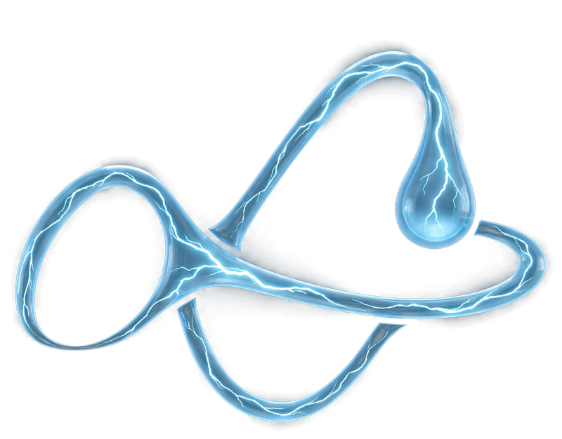

Own brand

Forvr.
Own brand
Forvr Collection is our own brand, and the place the studio’s method was built. Before we took on a client, we used it to work through the hard problems first: keeping a garment’s stitching, colour and logo exact in every frame, making a set of images read as one shoot, and moving from stills to film without losing the product.
A black tracksuit and balaclava with blue contrast stitching and the Forvr mark embroidered on the chest. Thin, bright stitching shows every mistake, which made it the right test: the same piece had to read correctly against chain link, a corrugated shutter, a wet underpass, a stairwell and a graffiti alley, in different light and at different distances. The blue in the stitching is what ties the set together, picking up the shutter, the underpass lights and the enamel on the signet ring.


A jewellery line built around the same mark: a signet ring with FORVR set in blue enamel, the mark cast as a pendant, a chain that spells the name, and iced rings, earrings and grills. Metal and stones give away any inconsistency, so this is where we learnt to build each piece once as a reference and place it in the frame, rather than describe it and hope.

These films are where we tested what the method could do with movement: a figure sitting among a flock of sheep, a horse on still water, and the Forvr mark drawn in the air with a torch. None of them is selling a product. They were made to find out where generated film holds up, where it breaks and how to cut around it, and those answers now shape every film we make for clients.
Everything that worked here was written down and turned into the system every client job now runs on.
Films and images that agree with each other, built from your real product. The first conversation is free.